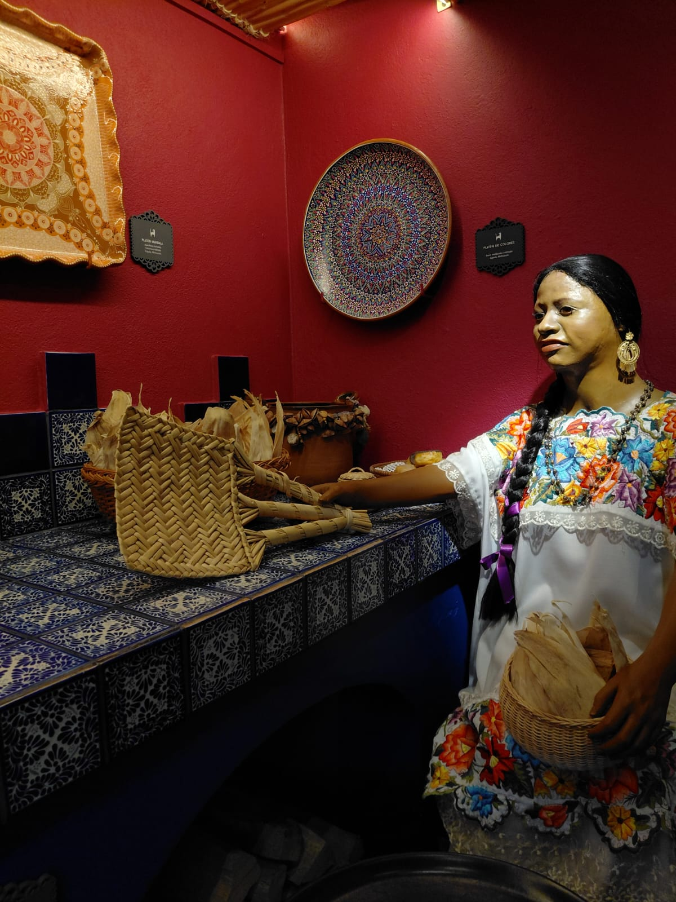

MERCADO DE ARTESANIAS

-Ubicación: Calle Alfareros, Colonia Centro. A 4 cuadras del jardín central, bajando hacia el lago. Todo mundo en Valle lo conoce.
-Horario: Todos los días de 9am a 8pm, pero se pone mejor jueves a domingo.
-Entrada: Gratis, solo pagas lo que compres.
Qué encuentras:
1. Cerámica de alta temperatura - lo más famoso de Valle
2. Barro vidriado y hierro forjado
3. Textiles deshilados - los tradicionales de Valle, hechos a mano
4. Ocoxal - productos hechos con hoja de pino, son únicos de aquí. Canastas, tapetes, adornos. Es una técnica prehispánica que sobrevivió.
5. Madera tallada y juguetes tradicionales
Son más de 100 locales, todos son familias artesanas de Valle y de pueblos cercanos como Amanalco, Donato Guerra.
Museo de Arte Popular
Museo pequeño pero espectacular que resguarda una delicada colección de piezas creadas por grandes maestros artesanos de México. No es del gobierno, es una colección privada de arte popular mexicano.
Tiene:Alebrijes, barro de Metepec, textiles, tallas de madera, cerámica, lacas, máscaras5 secciones por tema para que veas la conexión entre regionesColecciones históricas y contemporáneas de alfarería, indumentaria tradicional y piezas galardonadas de las etnias mazahua y otomí, que son las de Valle

Kiosco de valle de bravo
Nombre oficial: Kiosco del Jardín Central o Plaza de los Tres Árboles Ubicación: En el mero centro de Valle de Bravo, Municipio de Valle de Bravo, Estado de México. A un costado de la Parroquia de San Francisco de Asís y rodeado por Los Portales.
Descripción física:Es un kiosco tradicional mexicano, de planta octagonal. Tiene:Base de columnas de madera pintadas de blanco, Techo de teja roja de barro a aguas Barandal de herrería En el centro tiene bancas interiores de madera Alrededor, bancas de hierro fundido bajo la sombra de 3 laureles centenarios (por eso le dicen Plaza de los Tres Árboles)Historia rápida (muy importante si tu tema es Resistencia):
El jardín ha tenido 4 kioscos. El actual no es el original.
Años 60: Era el punto de reunión de jóvenes que daban vueltas alrededor. Las mujeres para un lado, los hombres para el otro.1977: El presidente municipal Antonio Esper Bujaidar lo demolió para "modernizar" y puso una pérgola y fuente moderna. A la gente no le gustó.1994: El presidente Eligio Quintanilla lo volvió a demoler y construyó el kiosco de madera que ves hoy + la Fuente de los Loros. Este sí gustó y se quedó como símbolo.Función actual:Domingos: toca la banda municipalPunto de encuentro, se venden nieves de pasta, esquites vallesanos, pan de AmecamecaA veces se usa para ceremonias cívicas y ofrendas de Día de Muertos